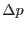
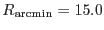

When evproject is pointed to the ODF as the source for information on the changes in spacecraft attitude over the exposure duration (attsource=`odf'), it automatically bins up the attitude wander in order to shorten the processing time. Each bin is associated with a start time (which is equal to the end time of the previous bin, if there is one), and end time (which is equal to the start time of the following bin, if there is one) and an attitude. The binning is done as follows. For each event time, evproject attempts to obtain the s/c attitude via an oal call. This call is either successful or unsuccessful. evproject begins a new attitude bin if any of the following occur:
It can thus be seen that each bin duration spans oal calls which were either all successful or all unsuccessful. The attitude of each new `successful' bin is set to the baseline attitude. The baseline attitude is initially set to the attitude returned by the first succesful oal call. If the attitude returned by any subsequent successful oal call diverges from the baseline by more than set limits (item 4 in the list above), the baseline attitude is altered. However usually only one of the components of the baseline attitude is altered at a time. This comes about as follows. There are separate limits on each of the three attitude components (RA, dec and position angle). If any component of the momentary attitude diverges from the same component of the baseline attitude by more than the respective limit, that component of the baseline attitude is set to the momentary value; components which have not wandered out of bounds are left unaltered. Note also that a change of bin due to change of success of oal call does not in itself alter the baseline. If a new bin starts because the oal calls have returned to the successful state, the attitude assigned to the new bin is the baseline value, which is also the attitude of the last `successful' bin.
This binning scheme is perhaps a little complicated, but has been chosen so as to adhere as closely as possible to the original attcalc scheme. However note that (i) evpproject does not quite adhere to the same scheme, and (ii) the component limits are calculated in a different way to attcalc (see below).
The limits on attitude wander are defined via the parameter maxdelta, which is in arcseconds. The RA limit is set to
where is the DEC_PNT value. The declination limit is just set to maxdelta, and the position angle (apos) limit  is set to
where  is the nominal radius of the field of view of the XMM EPIC cameras.